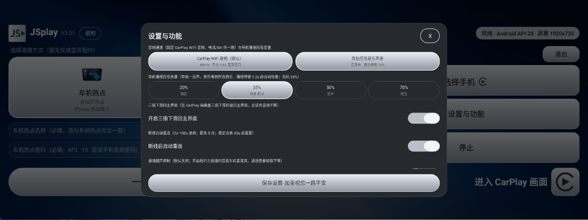

Ваш iPhone.
Як удома у вашому авто.
JSPLAY - це порт CarPlay, створений спеціально для французьких автомобілів (Peugeot/Citroen) з головними пристроями Hangsheng 'великий синій екран'. Найскладніша частина - handshake Bluetooth - зайняла майже два місяці, і керування на кермі для Citroen C5 X на обладнанні Hangsheng уже реалізовано. Аудіоканали та відеопотік CarPlay ще вдосконалюються; TCP зараз працює на порту 7000. Вітаємо внески спільноти для створення плавнішого порту.
Без джейлбрейка, адаптера, облікового запису й сервера автентифікації.
Встановлюйте на автомобіль, а не на iPhone. Бездротове підключення працює через вбудовану точку доступу автомобіля або Wi-Fi Direct (Android 10+). Сумісність залежить від головного пристрою, прошивки й версії iOS.
Створено спеціально для французьких автомобілів (Peugeot/Citroen) з головними пристроями Hangsheng 'великий синій екран', особливо Citroen C5 X. Інші автомобілі не перевірені та не підтримуються.
Звична поїздка



Встановлення в автомобілі
- Збери застосунок із джерел за інструкцією, потім встанови APK способом, який підтримує головний пристрій.
- Відкрийте JSPLAY і надайте запитані дозволи на Bluetooth, Wi-Fi/геопозицію й мікрофон.
- Увімкніть вбудовану точку доступу автомобіля (5 ГГц, якщо є). У Налаштування → Налаштування підключення виберіть «Вбудована точка доступу автомобіля» й збережіть її точну назву та пароль. Тримайте Wi-Fi і Bluetooth на телефоні увімкненими, сполучіть телефон з автомобілем, потім натисніть «Підключити телефон» і підтвердьте запити на телефоні.
- Для дротового підключення під’єднайте USB-кабель для передавання даних і виберіть «Підключити через USB». Підтвердьте запити USB, «Довіряти» або локальної VPN.
Для щоденного користування ADB не потрібен. Способи встановлення APK залежать від автомобіля. Вводити MAC-адресу вручну не потрібно.
Довідка зі встановлення й підключення ↗У цьому випуску
- Дані пісні CarPlay та обкладинки альбомів для сумісних Android-лаунчерів і медіаекранів.
- Запасний порт AirPlay, якщо заводська служба зайняла основний; обробка невідомого типу захисту та зайнятих каналів Wi-Fi Direct.
- Обробка зайвих байтів USBMUX зберігає розділені й об’єднані кадри; USB працює з незавершеними налаштуваннями ручної точки доступу.
- Усунення відлуння та шумозаглушення для дзвінків через підтримувані ефекти Android; доступність залежить від головного пристрою.
- Автовибір CAN або CANFD для зчитування батареї BYD через наявний мережевий ADB; доступні показники залежать від прошивки автомобіля.
- Показ або приховування копії карти на домашньому екрані зі збереженням карти на панелі приладів; нові українські переклади для карт і віджетів.
- Відео з перемотуванням і кроком десять секунд: вмикається окремо, лише в P з мережевим ADB і достовірним положенням коробки передач. FairPlay не підтримується.
- Обмежені діагностичні зведення Bluetooth, USB, повторного з’єднання, завантаження й мікрофона без запису звуку або вмісту пакетів.
Перш ніж спробувати
Це відкрита попередня версія, а не продукт, сертифікований Apple. Автентифікація використовує експериментальну ідентичність аксесуара, відновлену з публічної прошивки; що вона працюватиме й надалі, не гарантовано. На деяких головних пристроях досі бувають ривки або не діє зміна розміру значків. Почніть із 30 кадрів/с і вимкненим HEVC; за потреби спробуйте нижчу роздільність.
Новини про випуски
Новини проєкту в Telegram.
Область репозиторію
Модуль офлайн-автентифікації є приватною власністю й не включений сюди. Публікуються лише методи та інтерфейси, щоб розробники, які розуміють стек, створили реалізацію під власне налаштування. Клієнт автентифікації у джерелах лише демонструє контракт інтерфейсу й не містить реальної ідентичності чи облікових даних. Інсталяційні пакети, ключі підпису та ідентичність аксесуара не поширюються.
Оновлення й підпис
Збірки створюються локально з джерел; репозиторій не поширює інсталяційні пакети чи ключі підпису. Див. інструкцію зі збірки.